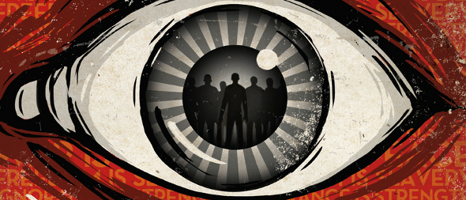

Nineteen eighty-four
It was a bright cold day in April, and the clocks were striking thirteen. Winston Smith, his chin nuzzled into his breast in an effort to escape the vile wind, slipped quickly through the glass doors of Victory Mansions, though not quickly enough to prevent a swirl of gritty dust from entering along with him.
The hallway smelt of boiled cabbage and old rag mats. At one end of it a coloured poster, too large for indoor display, had been tacked to the wall. It depicted simply an enormous face, more than a metre wide: the face of a man of about forty-five, with a heavy black moustache and ruggedly handsome features. Winston made for the stairs. It was no use trying the lift. Even at the best of times it was seldom working, and at present the electric current was cut off during daylight hours. It was part of the economy drive in preparation for Hate Week. The flat was seven flights up, and Winston, who was thirty-nine and had a varicose ulcer above his right ankle, went slowly, resting several times on the way. On each landing, opposite the lift-shaft, the poster with the enormous face gazed from the wall. It was one of those pictures which are so contrived that the eyes follow you about when you move. The caption beneath it ran:
BIG BROTHER IS WATCHING YOU
War is peace
Freedom is slavery
Ignorance is strength